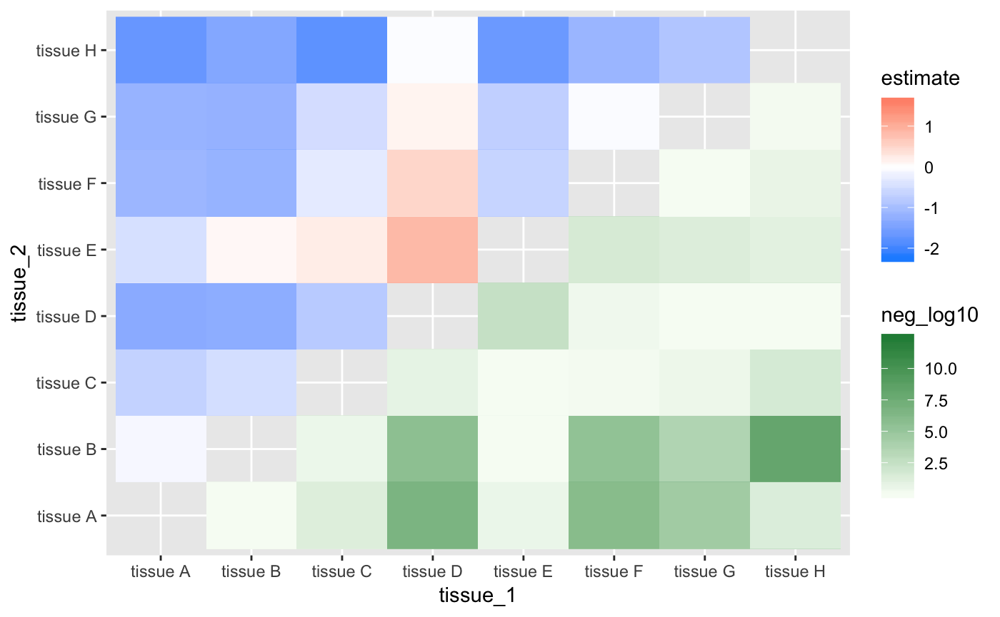
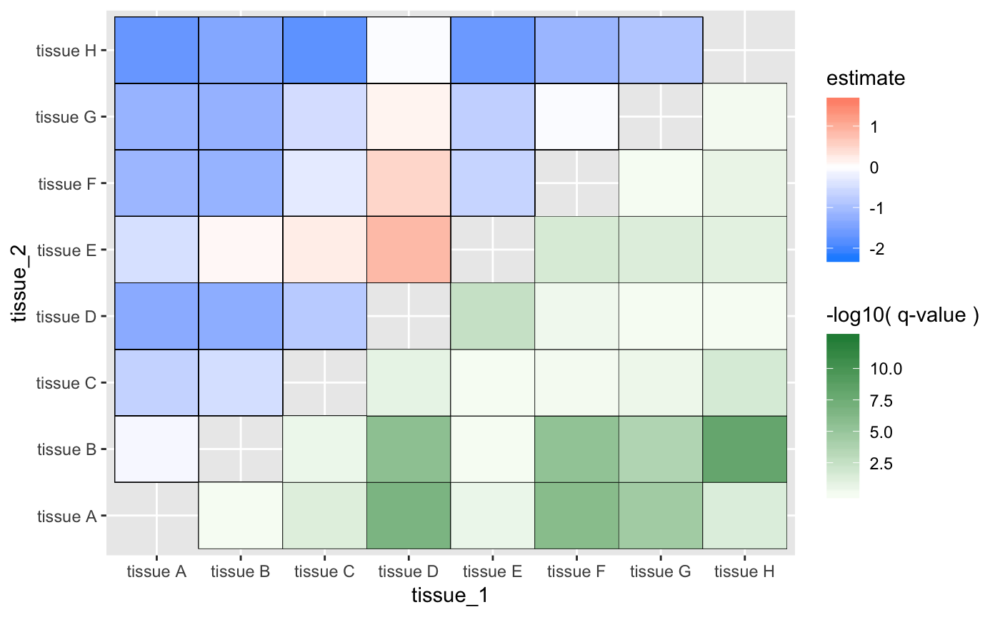
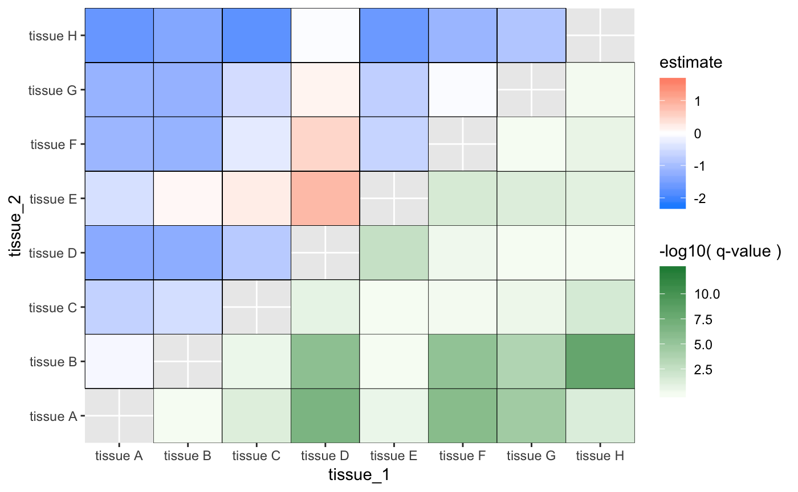
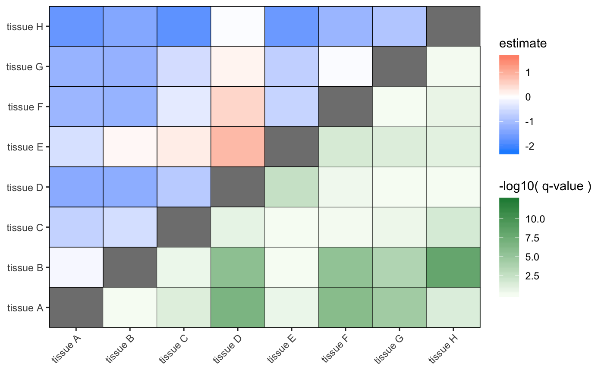

Plotting statistical significance and difference in values
Joshua H. Cook
2019-02-24
Source:vignettes/enrichment_example.Rmd
enrichment_example.RmdFor this example, I will be using the included enrichment_data tibble. It is printed below and further information can be found in the documentation (?enrichment_data).
## # A tibble: 166 x 4
## hallmark comparison estimate adj.p.value
## <chr> <chr> <dbl> <dbl>
## 1 Activating Invasion and Metastasis tissue A-tissue… -0.282 7.03e- 1
## 2 Activating Invasion and Metastasis tissue C-tissue… -0.504 1.31e- 1
## 3 Activating Invasion and Metastasis tissue D-tissue… -1.69 0.
## 4 Activating Invasion and Metastasis tissue E-tissue… -0.382 4.00e- 1
## 5 Activating Invasion and Metastasis tissue F-tissue… -1.37 5.49e-10
## 6 Activating Invasion and Metastasis tissue G-tissue… -1.91 4.80e-10
## 7 Activating Invasion and Metastasis tissue C-tissue… -0.222 9.01e- 1
## 8 Activating Invasion and Metastasis tissue D-tissue… -1.41 6.14e-11
## 9 Activating Invasion and Metastasis tissue E-tissue… -0.0992 9.98e- 1
## 10 Activating Invasion and Metastasis tissue F-tissue… -1.09 3.78e- 7
## # … with 156 more rowsThe data is the result of finding the pathways associated with the various Hallmarks of Cancer (COSMIC - Hallmarks of Cancer) that are enriched for mutations among 7 cancer types (labeled as tissue A-G). Each row in the tibble is a test of the enrichment scores of the hallmark between the cancer types in comparison. The estimate is the different between average values of the two cancers, and the adj.p.value is the multiple hypothesis testing-corrected (Benjamini and Hochberg) p-value (sometimes called the q-value). The statistical test was an ANOVA for each Hallmark and then Tukey tests between each cancer type. The data was then cast into a tibble using broom::tidy()
I would like to plot a matrix of \(tissue \times tissue\), coloring the top-left by estimate and bottom-right by \(-\log_{10} \text{q-value}\).
First, I need to break up the comparison into the two tissues being tested.
enrich_data <- enrichment_data %>%
mutate(tissue_1 = str_split_fixed(comparison, "-", 2)[, 1],
tissue_2 = str_split_fixed(comparison, "-", 2)[, 2])I also need to calculate the \(-\log_{10} \text{q-value}\), first setting any \(0\) values to \(10^{-6}\).
Here are the results of the above mutations
## # A tibble: 166 x 5
## hallmark tissue_1 tissue_2 estimate neg_log10
## <chr> <chr> <chr> <dbl> <dbl>
## 1 Activating Invasion and Metastasis tissue A tissue B -0.282 0.153
## 2 Activating Invasion and Metastasis tissue C tissue B -0.504 0.882
## 3 Activating Invasion and Metastasis tissue D tissue B -1.69 Inf
## 4 Activating Invasion and Metastasis tissue E tissue B -0.382 0.398
## 5 Activating Invasion and Metastasis tissue F tissue B -1.37 9.26
## 6 Activating Invasion and Metastasis tissue G tissue B -1.91 9.32
## 7 Activating Invasion and Metastasis tissue C tissue A -0.222 0.0453
## 8 Activating Invasion and Metastasis tissue D tissue A -1.41 10.2
## 9 Activating Invasion and Metastasis tissue E tissue A -0.0992 0.000806
## 10 Activating Invasion and Metastasis tissue F tissue A -1.09 6.42
## # … with 156 more rowsWe can now plot by passing the data table to geom_asymmat, returning a ggplot object.

ggplot(enrich_data) +
geom_tile(aes(x = tissue_1, y = tissue_2, fill = estimate)) +
scale_fill_gradient(low = "dodgerblue", high = "tomato") +
ggnewscale::new_scale_fill() +
geom_tile(aes(x = tissue_2, y = tissue_1, fill = neg_log10)) +
scale_fill_gradient(low = "white", high = "green")
These 4 arguments are the only ones required, but the plot can be improved by passing values for the color_tl/br to color the lines between the tiles and lab_tl/br to label the scales for the top and bottom coloring schemes.
g <- geom_asymmat(enrich_data, tissue_1, tissue_2, estimate, neg_log10,
color_tl = "black", color_br = "black",
lab_tl = "estimate", lab_br = "-log10( q-value )")
plot(g)
## [1] "gg" "ggplot"Since the returned value is a ggplot object, it can be modified just like any other time you have used ggplot() + geom_*(). For example, I will remove the gap between the axes and the data.

The values along the diagonal are all NA, therefore, the background color is just showing through. I will adjust the theme to make this look a bit better. I hope to implement a third fill aesthetic for these data points in the future.
g <-g + theme(panel.background = element_rect(fill = "grey50"),
panel.border = element_rect(fill = NA, color = "black"),
axis.title = element_blank(),
axis.text.x = element_text(angle = 45, hjust = 1),
panel.grid = element_blank())
plot(g)